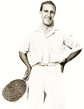
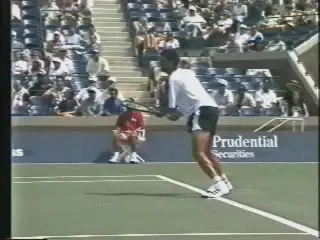
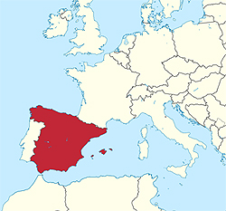
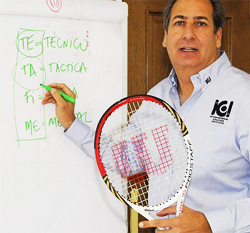
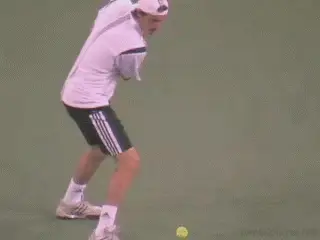
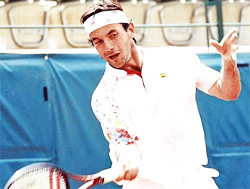
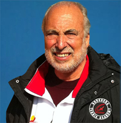
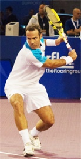
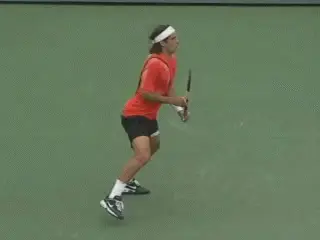

Previous: Secrets of Spanish Footwork | 🏠 Classic Lessons Home | Next: Secrets of Spanish Tennis - Suffering
Secrets of spanish tennis paradigms and superstructure
Comprehensive unified tennis knowledge base — Fundamentals, Stroke Analysis, Reference Library, and more
Secrets of Spanish Tennis:Paradigms and Superstructure
Chris Lewit

Why have the Spanish succeeded in developing world class players?
Spanish Tennis or the Spanish method has become synonymous with world-class tennis success in the past 20 years. What makes Spanish tennis so unique?
What exactly are those Spanish coaches doing so differently to develop superstars that other systems are not doing? To answer that question over the last several years, I have visited many of the top Spanish academies and studied with and interviewed some of the leading coaches in Spain.
As it turns out the Spanish success is not really due to a technical teaching methodology. Rather is it is a confluence of philosophical assumptions and training techniques, combined with cultural and even geographical elements.
In this article let's first look at certain paradigmatic elements and the unique cultural superstructure of Spanish tennis. Then in upcoming we will turn to some of the oncourt "secrets" utilized by the country's top coaches.
Miguel Crespo is a leading Spanish Sport Science researcher, a coach, and the head of the ITF research office based in Spain. He identifies eight factors that have contributed to Spanish success, elements which are unique to Spanish history, culture and geography:
Key Elements in Spanish Tennis:
5. Weather
6.Clay Courts
7. Role Models and Mentoring
8. Intensity and Hard Work
1. The History
2. Tournament Structure
3. Competitive Club System
4. Strong Coach Education

Manuel Alonso: Wimbledon finalist 1921.
History
The Spanish have a proud tennis culture and believe strongly in honor and tradition. The first great Spanish champion, Manuel Alonzo reached the Wimbledon final in 1921. They've had Grand Slam winners from Manuel Santana in the 1960s, to Andres Gimeno and Manuel Orantes in the 1970s.
Starting with Sergi Bruguera and then Carlos Moya (who was the first Spanish man to reach the No.1 ranking) in the 1990s, and of course Rafael Nadal in the 2000s (one of the greatest players ever), young Spanish players have a tradition of champions that makes them believe that it is indeed possible to be the best in the world and win major titles.
There is also a strong tradition of sportsmanship that permeates training models. All students are expected to give their best and to win with honor and integrity.
Tournament Structure
Spain has one of the best, most comprehensive schedules of national junior, International Tennis Federation junior and professional circuits of events of any country in the world. Many top coaches have impressed upon me how important it is to have so many events, both pro and junior, all within driving distance from one another, or a short flight or train ride away.

Sergi Bruguera first of the modern tradition of Spanish champions.
This cluster of high level junior and professional tournaments is a tremendous developmental advantage and can make the move up the junior ITF and professional rankings more manageable and convenient for the players. Also, coaches are able to travel more frequently to watch their players because events are close to home. It is possible to play just professional circuits the whole year in Spain, all within a 4-8 hour radius of Barcelona, for example, without ever getting on a plane.
And Spain's location makes traveling to other European events very convenient as well. Barcelona has direct flights with destinations all over the world from its international airport, which has made it a very popular home base for many ATP/WTA professionals.
As one Spanish coach said, "In Spain, we have the three things that a player needs to improve: coaches, tournaments and players. And now more than ever before, everybody is coming here to Spain ... The best thing is to have the three things together. You don't find many places with that."

Spain, one of the best tournaments schedules, and close to the rest of Europe.
Strong Coach Education
Spain has a strong grassroots system with a good coaching education program in place. The RPT, founded by Luis Mediero, is a private coach education provider while the RFET (Spanish Federation) also offers strong beginner to advanced high performance level courses.
Competitive Club System
Spain has many strong local club programs and the clubs offer interleague competition teams which serve to help identify young, competitive kids who may have the talent to play the game at a high level.
Weather

Luis Mediero: a leader in Spain's strong coaching education.
The weather is similar to Florida, sunny year-round with mild temperatures in winter. Minimal rainfall allows outdoor play on the red clay year-round, which is a major advantage for Spanish players.
The hot months of July and August and the generally warm climate help toughen players physically and prepare them for the grind of a long match outdoors. Players in southern Spain train in even hotter climates than those in Barcelona.
Former world No. 1 doubles player Sergio Casal, cofounder of the Casal-Sanchez Academy, perhaps described it best: "What happens here? It's windy. It's sunny. It's hot. And it's slow ... And you have to play. You get strong here. Here you can build everything."
In search of better weather and training conditions, Andy Murray came to Spain at a young age to train at the Sanchez Casal Academy . Many other young British hopefuls have since followed.
Marat Safin came to Spain at an early age to hone his game on the red clay. Other Russians and Eastern European players have followed him, including Marat's sister Dinara.
Clay Courts
The ubiquitous red clay courts of Spain are perhaps the true secret of Spanish tennis. As all Spanish coaches will testify - the clay helps the development of tennis players in myriad ways.

Marat Safin, one of the first great champions who came to Spain from other countries.
"We play a lot on clay in Spain because we have a lot of clay courts and it's good for learning the game," said Javier Piles, long-time coach for David Ferrer, the 2013 French Open singles finalist. On clay the players learn to move and hit their shots on balance even when they are under pressure and this helps them a lot."
The clay in Spain is very slow, and by slowing down the ball speed, it becomes very difficult to hit clean winners when the kids are young. Young players learn to win with consistency and patience, rather than by trying to go for outright winners.
Because the points are longer, players learn tactics better they learn how to construct points rather than just hit winners. Players learn how to position their opponent, hurt them, move them around, and use the geometry of the court. They learn the chess game of tennis.
The clay is less stressful on the joints of the lower body and the back, allowing players to train longer with less pain and fewer chronic injuries. The slow ball speed on clay can assist in the development of proper technique in young, developing players.
The slow and heavy conditions on the red clay force the player to develop maximum kinetic chain and racquet speed in order to successfully compete. Players learn by necessity to develop strong acceleration.
Spain's clay courts: ubiquitous and slow.
The inherent instability of the clay surface helps players develop better dynamic balance, stability on the run, and general lower body and foot coordination.
Role Models and Mentoring
During my travels in Spain, I was very surprised at the relative cooperation and friendliness between the elite coaches and academies. Even though they are competitors, they each understand their role in development and work together when possible to help Spain.
The same inter-academy cooperation and support is also demonstrated by the individual players in Spain, who are in general, very humble and down to earth, and willing to help their compatriots succeed. There is a "rising tide lifts all boats" mentality, ratherthan a "scorched earth" competitive approach.
Role models and mentoring are an important component to Spanish success. Emilio Sanchez called this the importance of "generations."

Emilio Sanchez stresses the importance of "generations."
Spanish players believe in helping the next generation of players to improve Spanish tennis as a whole. Time and again at Spanish training centers, I've seen older pros training with younger junior players without whining or complaining. The Spanish have somehow inculcated this generous nature towards countrymen in the majority of its successful players.
As former world No.2 Alex Corretja said to journalist James Goodall, "We are like a family and we always try to help each other as much as we can.
"When I started, a lot of the top players like Alberto Berasategui and Carlos Costa helped me to become a good player by letting me share coaches and practices with them. I learned a lot from them as a player, and now with this knowledge and my experience, I'm trying to do the same as a coach with the players I work with."
The mentoring approach was adopted not only by players, but by coaches, like Pato Alvarez and Lluis Bruguera, who were open and eager to share their knowledge with the younger generation of talented coaches. Even today, Pato and Luis are happy to share their knowledge with any coaches who come to visit them. (Click Here for Chris Lewit's interviews with Lluis Bruguera.)

Luis Bruguera: eager and open to share with younger coaches.
The Sanchez-Casal Academy even offers a training course in conjunction with the RPT to train any coach who is interested in their "Spanish Method." When I asked Casal why they offer such a course, he stated earnestly that they really wanted to help improve tennis around the world by sharing their system.
Coming from the hypercompetitive world of high performance tennis in the United States, this statement really left an impression on me. In Goodall's article "Spain's Generation Game" published on the ATP World Tour's website, he described Spain's commitment to helping the next generation for both coaches and players: "
Then, the same situation triggered the next generation; younger coaches learning from older ones, they see the results, they imitate, and they keep on progressing and so a successful system was formed./I One of the products of that system, 1998 and 2001 Roland Garros finalist Corretja, stressed it wasn't only the coaches who were key, however; but that the older; more experienced and higher-ranked players themselves also fulfilled an important role by mixing with the juniors at that time.

Alex Corretja stresses the importance of high ranked players mixing with juniors.
"This is very important in the development of the younger players," said Corretja. "When I was young I was lucky enough to practice with players like Emilio Sanchez and Carlos Costa as well as many others and it was unbelievable for me as I was dying to get on the court with them.
"When I was a little bit older I used to practice with some of the younger players coming through like Carlos Moya and Juan Carlos Ferrero, and now the young guys in Spain are practicing with them so it works really well."
Having benefited from the system himself, Corretja believes older players have a duty to nurture young talen. The point wasn't lost on Moya, who famously took Rafael Nadal under his wing when the Mallorcan was a young teenager taking his first tentative steps on the professional circuit.
"I got to know Carlos way before I started playing on the tour and I practiced with him a lot back home in Mallorca," said Nadal. "I trusted him and he gave me a lot of confidence."
Spain's focus on blending the generations not only provides mentoring support for players but also helps to reinforce the competitive spirit. Said Albert Costa, the 2002 French Open champion, "The role models are very important. And here in Spain, here in this Academy, we have Albert Montanes, Nicloas Almagro, Feliciano Lopez, a lot of professional tennis players and they practice with the young players.
"They play with them. For the juniors it's good to see the difference of the levels. It's very, very important."
This unusual amount of inter-academy cooperation, coach and player mentoring and role-modeling, and friendly competition between compatriots has been an incredible asset to Spanish tennis development as a whole. Other countries would be wise to encourage a similar culture of generosity, humility, sharing and cooperation.

Elite players like Feliciano Lopez practice with juniors at the Spanish academies.
Intensity and Hard Work
Intensity and hard work are qualities shared by the players and also the coaches. Albert Costa summed this up perfectly when he said, "The most important thing with drills is the intensity. If you make drills with intensity, full of concentration, that's the only way you can improve your tennis."
This mentality is evident throughout Spanish tennis. Said Spanish coach Alberto Lopez, "The most important thing is the mentality. We are really fierce . This is our game."
These eight contributing factors--coaching philosophies and methods aside--have been tremendously important in Spain's rise to dominance in the tennis world. Next let's look at some of the actual on court secrets.

Chris Lewit, former #1 for Cornell and Pro Circuit player, has coached numerous top 10 nationally ranked juniors and is a leading coach, educator, and author. He has written two best-selling books, The Secrets of Spanish Tennis and The Tennis Technique Bible.
Chris runs a popular high performance summer tennis camp in the beautiful mountains of Vermont and coaches players world-wide through his virtual school, CLTA Online (CLTA.teachable.com).
Chris also produces a weekly high performance tennis video talk show and podcast, The Prodigy Maker Show, which is available on Apple Podcasts and all other podcasting directories. All shows can be accessed at ProdigyMaker.com.
Check out Chris's blog, also at ProdigyMaker.com for free articles on high performance junior development and Spanish training. Learn about his camp at ChrisLewit.com or visit the online academy at CLTA.teachable.com

The Secrets of Spanish Tennis
What makes Spanish tennis so unique and successful? What exactly are those Spanish coaches doing so differently to develop superstars like Rafael Nadal and David Ferrer that other systems are not doing? These and other questions are answered in The Secrets of Spanish Tennis, the culmination of five years of study on the Spanish way of training by USTA High Performance Coach Chris Lewit.
Click Here to Order!
Source: tennisplayer.net archive — Secrets of Spanish Tennis - Paradigms and Superstructure.docx (John Yandell teaching library, 2002-2022). Extracted and rendered as HTML for Tennis Future Lab.